Chapter 6 Topology
6.1 Complex network
The microbial co-occurrence network we study is a complex network, which generally has the following characteristics, scale-free, small-world attributes, modularity and hierarchy.
| Terminology | Explanation |
|---|---|
| Scale-free | Scale-free It is a most notable characteristic in complex systems. It was used to desibe the finding that most nodes in a network have few neighbors while few nodes have large amount of neighbors. In most cases, the connectivity distribution asymptotically follows a power law. It can be expressed in , where \(P(k) \sim k^{-y}\) ,P(k) is the number of nodes with k degrees, k is connectivity/degrees andγis a constant. |
| Small-world | Small-world It is a terminology in network analyses to depict the average distance between nodes in a network is short, usually logarithmically with the total number of nodes. It means the network nodes are always closely related with each other. |
| Modularity | The modularity of a graph with respect to some division (or vertex types) measures how good the division is, or how separated are the different vertex types from each other. It defined as \(Q=\frac{1}{2m} \sum_{i,j} (A_{ij}-\gamma\frac{k_i k_j}{2m})\delta(c_i,c_j)\) ,here mm is the number of edges, \(A_{ij}\) is the element of the A adjacency matrix in row i and column j, \(k_i\) is the degree of i, \(k_j\) is the degree of j, \(c_i\) is the type (or component) of i, \(c_j\) that of j, the sum goes over all i and j pairs of vertices, and \(\delta(x,y)\) is 1 if x=y and 0 otherwise. The resolution parameter \(\gamma\) allows weighting the random null model, which might be useful when finding partitions with a high modularity.The original definition of modularity is retrieved when setting \(\gamma\) to 1. (Newman (2006)) |
| Hierarchy | Hierarchy It was used to depict the networks which could be arranged into a hierarchy of groups representing in a tree structure. Several studies demonstrated that metabolic networks are usually accompanied by a hierarchical modularity. |
fit_power() is used to prove the scale-free. smallworldness() can calculate the smallworld index.
data("c_net",package = "MetaNet")
fit_power(co_net)
Figure 6.1: Fit power-law distribution for a network.
smallworldness(co_net)
## 43.093686.2 Modules
A community is a subgraph containing nodes which are more densely linked to each other than to the rest of the graph or equivalently, a graph has a community structure if the number of links into any subgraph is higher than the number of links between those subgraphs.
Use modu_net() to generate a n-modules network and do some modules analysis test.
test_modu_net=modu_net(n_modu = 3,n_node_in_modu = 30)
plot(test_modu_net,mark_module=T)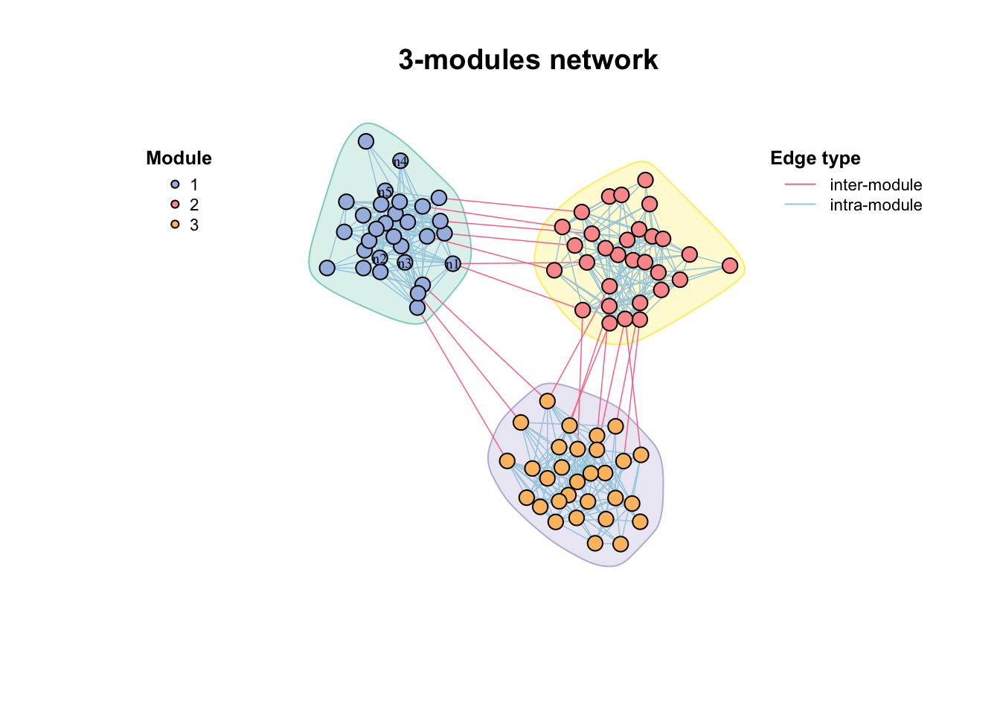
Figure 6.2: A 3-modules network generated by modu_net()
6.2.1 Module detection
Algorithms:
short random walks
leading eigenvector of the community matrix
simulated annealing approach
greedy modularity optimization
…
You can get network modules by modu_dect() with various methods. But we sometimes just focus on several modules instead of all, so we can use filter_n_modu() to get modules which have more than n nodes, or keep some other modules by ids.
par(mfrow=c(2,2),mai=rep(1,4))
#module detection
modu_dect(co_net,method = "cluster_fast_greedy") -> co_net_modu
get_v(co_net_modu)[,c("name","module")]%>%head()## name module
## 1 s__un_f__Thermomonosporaceae 9
## 2 s__Pelomonas_puraquae 1
## 3 s__Rhizobacter_bergeniae 4
## 4 s__Flavobacterium_terrae 11
## 5 s__un_g__Rhizobacter 6
## 6 s__un_o__Burkholderiales 1plot(co_net_modu,plot_module=T,mark_module=T,legend_position=c(-1.8,1.6,1.1,1.3))
table(V(co_net_modu)$module)##
## 1 10 11 12 13 14 15 16 17 18 19 2 20 21 22 23 24 25 26 27 28 29 3 30 4 5
## 61 28 18 14 16 21 15 8 6 2 4 42 3 3 2 2 2 2 2 3 2 3 30 2 31 24
## 6 7 8 9
## 18 21 28 16#keep some modules
co_net_modu2=filter_n_modu(co_net_modu,n_modu = 30,keep_id = 10)
plot(co_net_modu2,plot_module=T,mark_module=T,legend_position=c(-1.8,1.3,1.1,1.3))
#change group layout
g_lay_nice(co_net_modu,group = "module")->coors
plot(co_net_modu2,coors=coors,plot_module=T,mark_module=T)
#extract some modules, delete =T will delete other modules.
co_net_modu3=filter_n_modu(co_net_modu,n_modu = 30,keep_id = 10,delete = T)
plot(co_net_modu3,coors,plot_module=T)Figure 6.3: Module detection results by modu_dect()
Look at the components of the network, some too small sub_graphs will effect the modules, if you do not care about these small components, you can just filter out them.
table(V(co_net_modu)$components)##
## 1 10 11 12 13 14 15 2 3 4 5 6 7 8 9
## 391 2 3 3 2 2 2 2 6 4 2 2 3 2 3co_net_modu4=c_net_filter(co_net_modu,components=1)
#re-do a module detection
co_net_modu4=modu_dect(co_net_modu4)
g_lay_nice(co_net_modu4,group = "module")->coors
plot(co_net_modu4,coors,plot_module=T)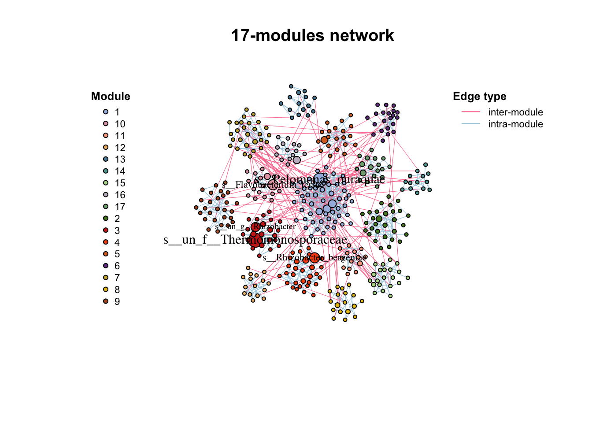
Use plot_module_tree() can display the relationship of nodes, and combine_n_modu() can change the module numbers to a specific number (can not be too big or too small if there are some small small sub_graphs)
p1=plot_module_tree(co_net_modu4)
#combine 17 modules to 5.
co_net_modu5=combine_n_modu(co_net_modu4,5)
p2=plot_module_tree(co_net_modu5)
p1+p2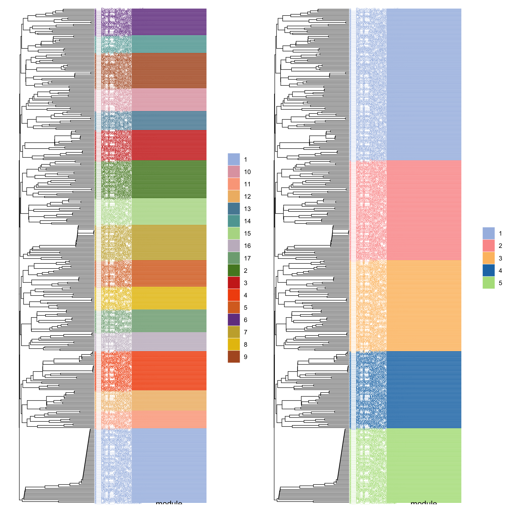
Figure 6.4: Modules tree
We could also use this network module indicates some cluster which have similar expression. But we should filter the positive edges firstly as the module detection only consider topology structure rather than the edge type. After filtering the positive edges and module detection will find some modules like WGCNA gene modules, and we can also get the “eigengene” using module_eigen() and have a general look at each module expression by module_expression().
data("otutab",package = "MetaNet")
totu=t(otutab)
#filter positive edges
c_net_filter(co_net,e_type="positive")->co_net_pos
co_net_pos_modu=modu_dect(co_net_pos,n_modu = 10,delete = T)
g_lay_nice(co_net_pos_modu,group = "module")->coors1
plot(co_net_pos_modu,coors1,plot_module=T)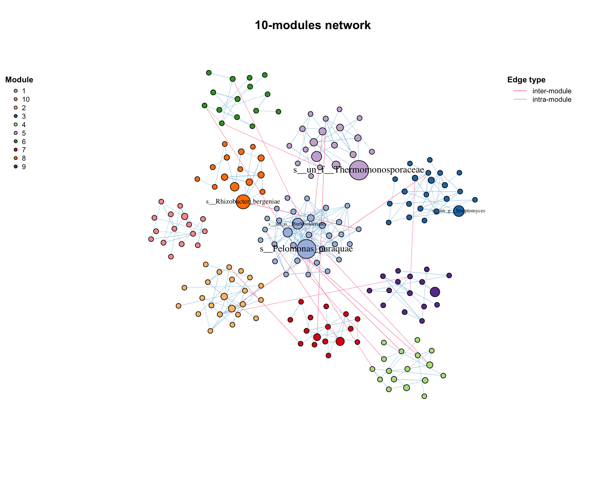
Figure 6.5: Module eigenvalue of positive cluster.
#map the original abundance table
module_eigen(co_net_pos_modu,totu)->co_net_pos_modu
#plot the expression pattern.
p1=module_expression(co_net_pos_modu,totu,cor = 0.6,nrow = 4)+theme(axis.text.x = element_text(size=5,angle = 90,vjust = 0.5))
#correlate to metadata.
env=metadata[,3:8]
p2=cor_plot(get_module_eigen(co_net_pos_modu),env)+coord_flip()
p1/p2+patchwork::plot_layout(heights = c(2,1))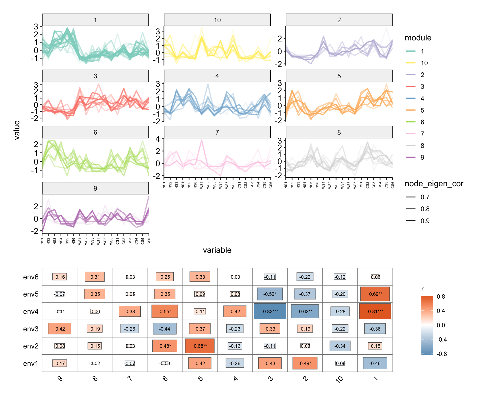
Figure 6.6: Module eigenvalue of positive cluster.
#summary some variable according to modules.
p3=summ_module(co_net_pos_modu,var = "Phylum")
p4=summ_module(co_net_pos_modu,var = "node_eigen_cor")
p3+p4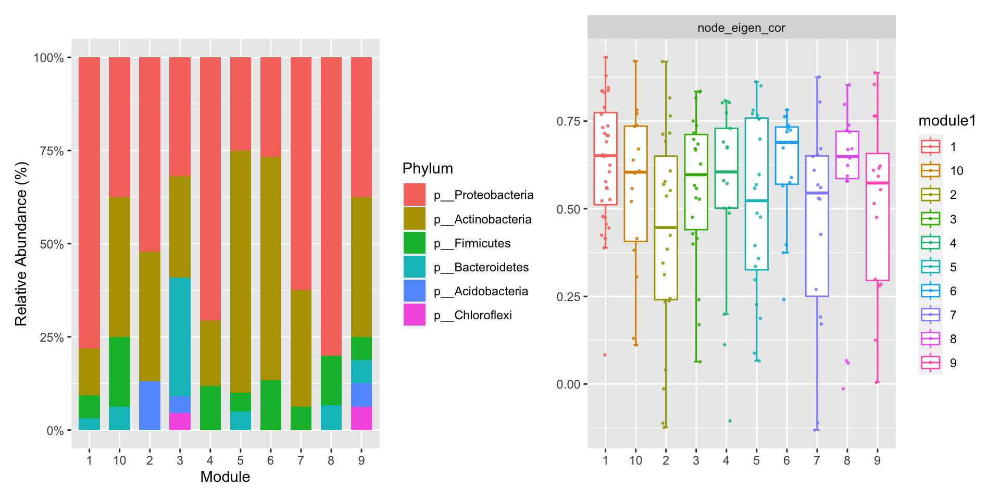
Figure 6.7: Summary of some variables in each modules.
Use links_stat() to summary the edges and find most edges are from a module to the same module (means module detection is OK).
links_stat(co_net_modu2,group = "module",legend_number = T)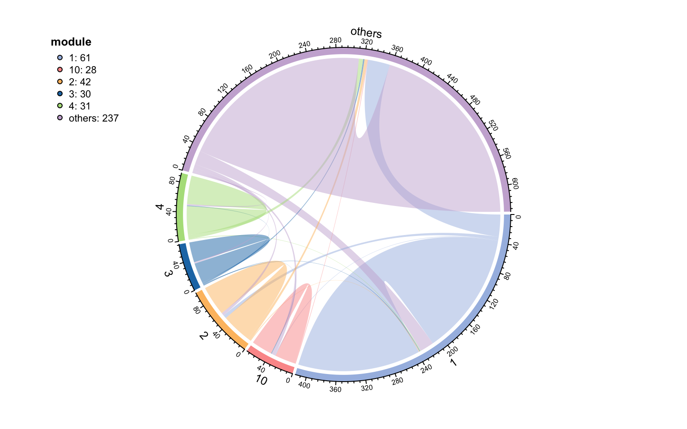
Figure 6.8: Summary of edges in each modules
6.2.2 Keystone
After we determine these modules of network, the topological role of each node can be calculated according to Zi-Pi (Guimerà and Amaral (2005)). Within-module connectivity (Zi):
\(Z_i= \frac{\kappa_i-\overline{\kappa_si}}{\sigma_{\kappa_{si}}}\) Where \(κ_i\) is the number of links of node i to other nodes in its module si, \(\overline{\kappa_{si}}\) is the average of k over all the nodes in si, and \(\sigma_{\kappa_{si}}\) is the standard deviation of κ in si.
Among-module connectivity (Pi):
\(P_i=1-\sum_{s=1}^{N_m}{\left( {\frac{\kappa_{is}}{k_i}} \right)^2}\) where \(κ_{is}\) is the number of links of node i to nodes in module s, and \(k_i\) is the total degree of node i.
And researchers often divide module roles into four categories:
| Zi | Zi>2.5 | |
|---|---|---|
| Pi | peripherals | module hubs |
| Pi>0.62 | connectors | network hubs |
And some articles define these red categories as keystone of network (Liu et al. (2022)).
Use zp_analyse() to get module roles and store in the vertex attributes, then we can use zp_plot() to visualize. We can see the module hubs are center of a module while connector are often mediate the connection of different modules.
zp_analyse(co_net_modu4)->co_net_modu4
get_v(co_net_modu4)[,c(1,16:21)]%>%head## name components module origin_module Ki Zi
## 1 s__un_f__Thermomonosporaceae 1 3 3 3 0.4531635
## 2 s__Pelomonas_puraquae 1 1 1 16 2.2142712
## 3 s__Rhizobacter_bergeniae 1 4 4 4 1.0183901
## 4 s__Flavobacterium_terrae 1 10 10 4 1.8439089
## 5 s__un_g__Rhizobacter 1 3 3 1 -1.3594905
## 6 s__un_o__Burkholderiales 1 1 1 16 2.2142712
## Pi
## 1 0.3750000
## 2 0.2770083
## 3 0.5714286
## 4 0.0000000
## 5 0.0000000
## 6 0.2037037#color map to roles
co_net_modu6=c_net_set(co_net_modu4,vertex_class = "roles")
plot(co_net_modu6,coors,mark_module=T,labels_num=0,group_legend_title="Roles")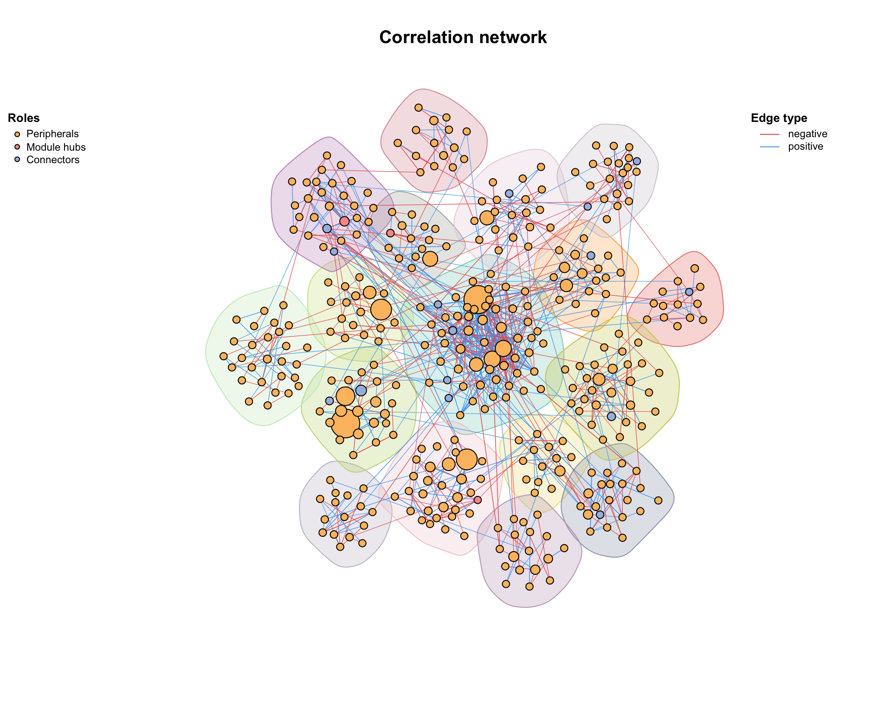
Figure 6.9: Zi-Pi analysis of a modular network.
library(patchwork)
zp_plot(co_net_modu4,mode = 1)+zp_plot(co_net_modu4,mode = 3)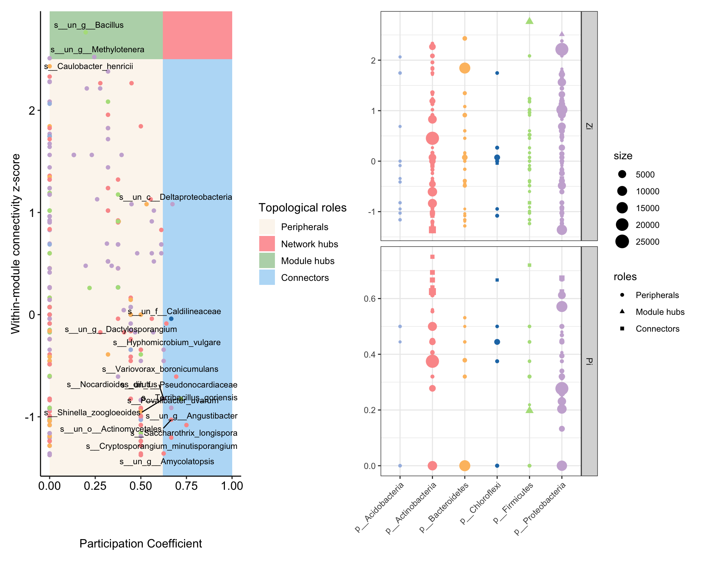
Figure 6.10: Zi-Pi analysis of a modular network.
6.3 Topology indexes
There are lots of topology indexes for network analysis, we collected many indexes often used for biological research. First part is topology indexes for individual nodes.
| Indexes | Formula | Note | Description |
|---|---|---|---|
| Connectivity/ Degree (centrality) | \(k_i=\sum_{j\neq i}a_{ij}\) | 𝑎𝑖𝑗 is the connection strength between nodes i and j. when 𝑎𝑖𝑗=1, ki is the unweighted degree | It is also called node degree. It is the most commonly used concept for describing the topological property of a node in a network. |
| Betweenness centrality | \(B_i=\sum_{j,k}\frac{\sigma(i,j,k)}{\sigma(j,k)}\) | 𝜎(𝑗,𝑖,𝑘) is the number of shortest paths between nodes j and k that pass through node i. 𝜎(𝑗,𝑘) is the total number of shortest paths between j and k. | It is used to describe the ratio of paths that pass through the ith node. High Betweenness node can serve as a broker similar to stress centrality. |
| Closeness centrality | \(Ci=1/\sum_{i\neq j}d_{ij}\) | The closeness centrality of a vertex is defined as the inverse of the sum of distances to all the other vertices in the graph. dij is the shortest distances from node i to j. | Closeness centrality measures how many steps is required to access every other vertex from a given vertex. |
| Eigenvector centrality | \(EC_i=\frac{1}{\lambda}\sum_{j\in M(i)}EC_j\) | M(𝑖) is the set of nodes that are connected to the ith node and λ is a constant eigenvalue. | It is used to describe the degree of a central node that it is connected to other central nodes. |
| Clustering coefficient | \(CCo_i=\frac{2l_i}{k_i'(k_i'-1)}\) | li is the number of links between neighbors of node i and k i ’ is the number of neighbors of node i. | It describe how well a node is connected with its neighbors. If it is fully connected to its neighbors, the clustering coefficient is 1. A value close to 0 means that there are hardly any connections with its neighbors. It was used to describe hierarchical properties of networks. |
| Eccentricity | \(E_i=\max_{j\neq i}(d_{ij})\) | dij is the shortest distance from node i to node j | The eccentricity of a vertex is its shortest path distance from the farthest other node in the graph. |
| Page.rank | \(PR_i=\sum_{j\in B_i}\frac{PR_j}{l_j}\) | i is the node whose pr value needs to be calculated, and Bi is the set of all nodes pointing to node i. PRj is the pr value of node j and lj is the number of links between neighbors of node j. | Calculates the Google PageRank for the specified vertices. PageRank, or webpage ranking, also known as webpage level, is an indicator to measure the importance of webpages. |
| Kleinberg’s hub and authority centrality | \(HC=\lambda_{AA^T}\) \(AC=\lambda_{A^TA}\) | The hub scores of the vertices are defined as the principal eigenvector of AAT, the authority scores of the vertices are defined as the principal eigenvector of ATA. where A is the adjacency matrix of the graph. | A node is an authority if it is linked to by hubs; it is a hub if it links to authorities. |
Second part is the overall network topological indexes.
| Indexes | Formula | Note | Description |
|---|---|---|---|
| Average connectivity/ degree | \(\overline{k}=\frac{\sum_{i=1}^{n}k_i}{n}\) | k i is degree of node i and n is the number of nodes. | Higher avgK means a more complex network. |
| Average path length/ Average geodesic distance | \(L=\frac{\sum_{i \ne j}d_{ij}}{n(n-1)}\) | dij is the shortest path between node i and j. | A smaller GD means all the nodes in the network are closer. |
| global efficiency/ Geodesic efficiency | \(E_g=\frac{\sum_{i \ne j}1/d_{ij}}{n(n-1)}\) | all parameters shown above. | It is the opposite of GD. A higher E means that the nodes are closer. |
| Centralization of degree | \(CD=\sum_{i=1}^{n}(\max(k)-k_i)\) | max(k) is the maximal value of all connectivity values and k i represents the connectivity of ith node. Finally this value is normalized by the theoretical maximum centralization score. | It is close to 1 for a network with star topology and in contrast close to 0 for a network where each node has the same connectivity. |
| Centralization of betweenness | \(CB=\sum_{i=1}^{n}(\max(B)-B_i)\) | max(B) is the maximal value of all betweenness values and B i represents the betweenness of ith node. Finally this value is normalized by the theoretical maximum centralization score. | It is close to 0 for a network where each node has the same betweenness, and the bigger the more difference among all betweenness values. |
| Centralization of closeness | \(CC=\sum_{i=1}^{n}(\max(C)-C_i)\) | max(C) is the maximal value of all closeness values and Ci represents the closeness of ith node. Finally this value is normalized by the theoretical maximum centralization score. | It is close to 0 for a network where each node has the same closeness, and the bigger the more difference among all closeness values. |
| Centralization of eigenvector centrality | \(CE=\sum_{i=1}^{n}(\max(EC)-EC_i)\) | max(EC) is the maximal value of all eigenvector centrality values and EC i represents the eigenvector centrality of ith node. Finally this value is normalized by the theoretical maximum centralization score. | It is close to 0 for a network where each node has the same eigenvector centrality, and the bigger the more difference among all eigenvector centrality values. |
| Density | \(D=\frac{2l}{n(n-1)}\) | l is the sum of total links. | The density of a graph is the ratio of the number of edges and the number of possible edges. It is closely related to the average connectivity. |
| Average clustering coefficient | \(\overline{CCo}=\frac{\sum_{i=1}^{n}CCo_i}{n}\) | 𝐶𝐶oi is the clustering coefficient of node i. | It is used to measure the extent of module structure present in a network. |
| Transitivity | \(Tr=\frac{\sum_{i=1}^{n}2l_i}{\sum_{i=1}^{n}(k'_i)(k'_i-1)}\) | li is the number of links between neighbors of node i and k i ’ is the number of neighbors of node i. | Sometimes it is also called the entire clustering coefficient. It has been shown to be a key structural property in social networks. |
| Natural connectivity | \(NC=\ln{\left(\frac{1}{N}\sum_{i=1}^{N}e^{\lambda_i}\right)}\) | Where N is nodes number of the network, represents the eigenvalue of the network adjacency matrix. |
Edges topology indexes are less.
We can get all these indexes easily by using net_par(). you can choose different mode (n,v,e) to get network, vertexes or edges indexes especially or just use “all” to get a list contains all indexes.
make_graph("Walther") %>% net_par(mode = "all")make_graph("Walther") %>% net_par(mode = "n")## $n_index
## name num_nodes num_edges edge_density neg_percent ave_path_len
## 1 Walther 25 31 0.1033333 NA 3.586667
## global_efficiency ave_degree w_ave_degree diameter clusteringC
## 1 0.3679762 2.48 2.48 8 0
## cen_betweenness nat_connectivity
## 1 0.1436084 1.029526
##
## $v_index
## NULL
##
## $e_index
## NULLOr you can use get_net_par() to calculate topology indexes and store in the network itself, which is very useful if you need to do following visualization.
#get a metanet
go=erdos.renyi.game(30,0.25)
go=c_net_update(go)
par(mfrow=c(1,2))
plot(go,legend=F,main="Same size")
#calculate topology indexes and store
go=get_net_par(go)
head(get_v(go))## name label size v_group shape v_class color degree clusteringC
## 1 n1 n1 12 v_group1 circle v_class1 #a6bce3 12 0.1818182
## 2 n2 n2 12 v_group1 circle v_class1 #a6bce3 10 0.2444444
## 3 n3 n3 12 v_group1 circle v_class1 #a6bce3 10 0.2444444
## 4 n4 n4 12 v_group1 circle v_class1 #a6bce3 5 0.2000000
## 5 n5 n5 12 v_group1 circle v_class1 #a6bce3 8 0.2857143
## 6 n6 n6 12 v_group1 circle v_class1 #a6bce3 5 0.3000000
## betweenness eccentricity closeness hub_score
## 1 40.144078 2 0.02173913 1.0000000
## 2 22.337912 3 0.02040816 0.8552635
## 3 18.686765 3 0.02000000 0.9073534
## 4 3.986948 3 0.01724138 0.4107643
## 5 11.058859 3 0.01960784 0.7733400
## 6 2.625397 3 0.01694915 0.5020124#use vertex.size to indicate degree
go=c_net_set(go,vertex_size ="degree")
plot(go,legend=F,main="Size map to degree")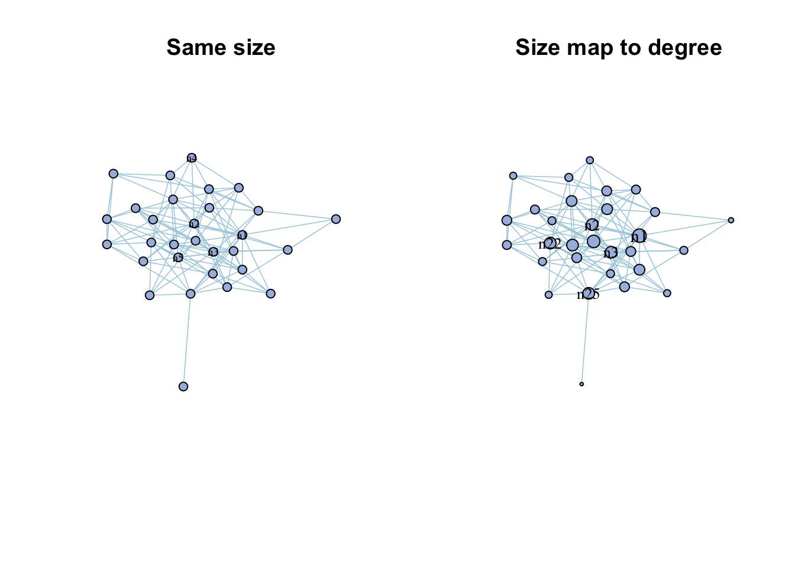
Figure 6.11: Use vertex indexes for visualization.
6.4 Random network
You can use rand_net() to generate a random graphs according to the Erdos-Renyi model with same node number and edge number of your network, then compare two network.
rand_net(co_net)->random_net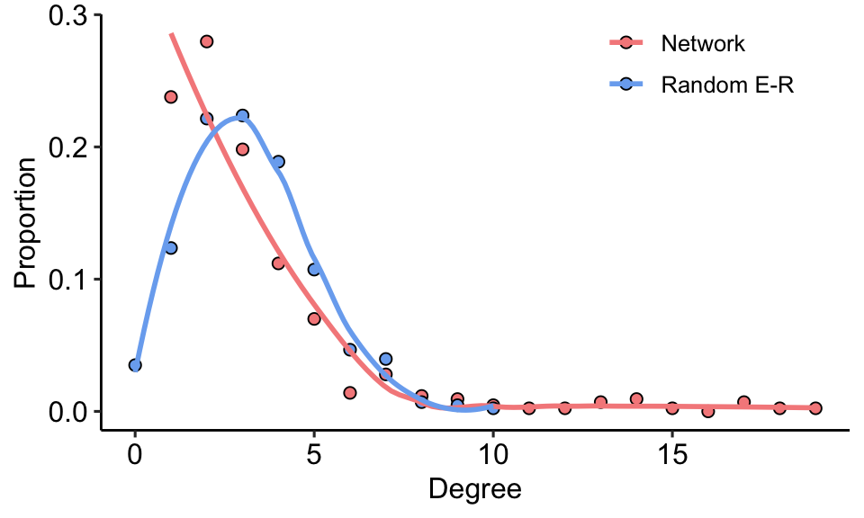
Figure 6.12: Comparison of complex network and random network degree distribution
Or use rand_net_par() to generate lots of random network and summary their topology indexes, then use compare_rand() to do the comparison.
rand_net_par(co_net,reps = 30)->randp
net_par(co_net)->pars
compare_rand(pars,randp,index =c("ave_path_len","clusteringC"))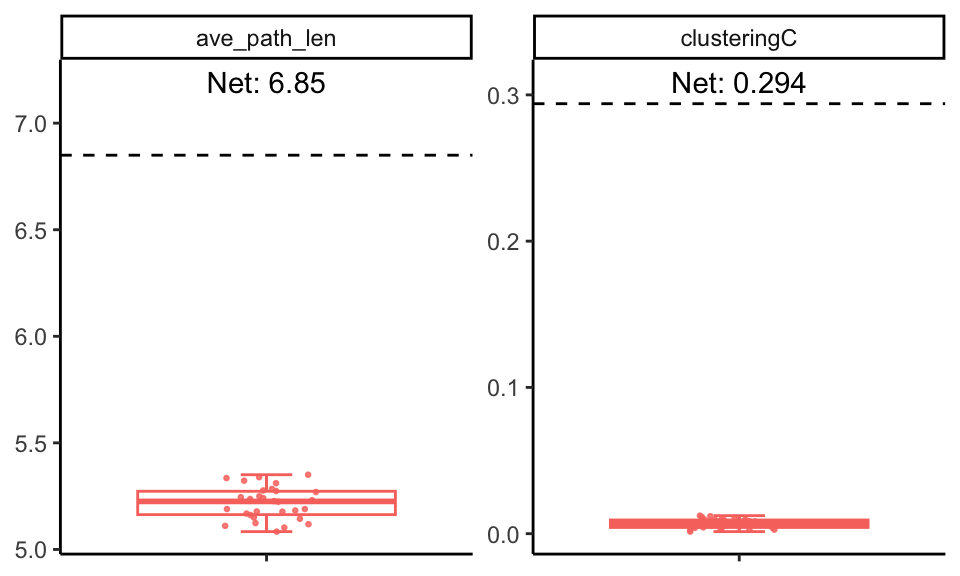
Figure 6.13: Comparison of complex network and random network on some indexes.